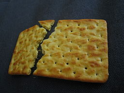

Home
Cracked-Crackers

Nada Stankova,
CC BY-SA 2.0, via Wikimedia Commons
Does your toddler like crackers? These crackers will B-L-O-W their
minds!!
Ingredients
- Any store bought crackers
- I prefer the baked, thin kind of crackers
- They break into a lot of pieces! Which is what you want
- A carpet, couch cushions or household object to crack the cracker
Steps
- Open the packet of crackers
- Stuff a few in between the couch cushions
- Randomly scatter a few on the ground
- Leave overnight to be sure the crackers are stale
Your toddler would love these stale broken pieces of crackers much more
than the meal you just spent and hour preparing. Bon Appetit!